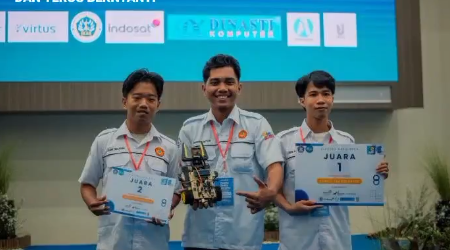

Rancang bangun deteksi postur dan durasi duduk untuk menjaga kesehatan tulang belakang serta produktivitas pekerja usia produktif secara real-time.

Duduk terlalu lama dengan posisi tubuh yang buruk dapat menyebabkan gangguan kesehatan tulang belakang (*musculoskeletal disorders*). Proyek ini dirancang untuk memantau posisi duduk seseorang secara real-time menggunakan jaringan sensor terintegrasi dengan mikrokontroler ESP32. Data posisi diolah dengan algoritma Machine Learning untuk mendeteksi kebiasaan duduk tidak sehat dan memberikan peringatan otomatis.
Mikrokontroler: ESP32 (Wi-Fi & Bluetooth Dual Core)
Algoritma AI: Random Forest Classifier
Database: Firebase Realtime Database
Bahasa Pemrograman: C++ (Arduino IDE) & Python (Data Analysis/Training)